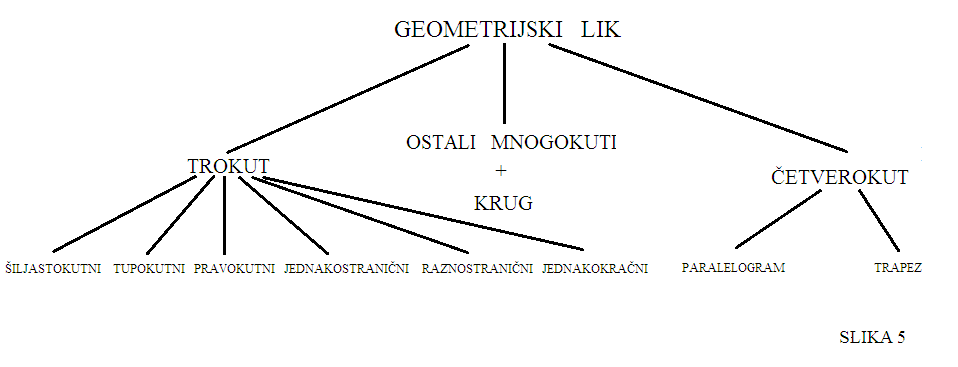
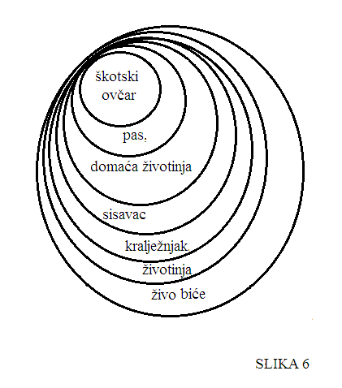
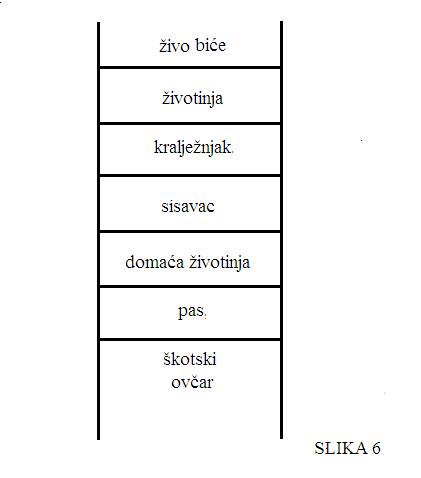

Ljestvica i piramida pojmova
Niti jedan pojam nije sam po sebi viši ili niži, već se to određuje u odnosu ili relativno na neki drugi pojam. Pogledajte sliku:

Iz slike se može iščitati kako su pojmovi kao što su "trokut" i "četverokut" podređeni, odnosno subordinirani pojmu "geometrijski lik". Ta dva pojma su također nadređeni ili superordinirani pojmovima "šiljastokutni", "pravokutni", "paralelogram", "trapez", "jednakostranični". Pojmovi "trokut" i "četverokut" su jedan u odnosu na drugog usporedni, odnosno koordinirani jer se nalaze u istoj ravnini.
Pogledajmo kako bi izgledalo kad bismo nacrtali rješenje 5. zadatka iz udžbenika pod odjeljkom vježbe I. U njemu treba poredati sljedeće pojmove prema veličini opsega: životinja, pas, škotski ovčar, sisavac, kralježnjak, domaća životinja, živo biće.

Iz slike možemo vidjeti i u kakvom su odnosu pojmovi koji se na njoj nalaze. Kako? Tako što znamo da se oni pojmovi koji su determiniraniji nalaze niže na ljestvici pojmova. Oni su dakle niži, dok se oni koji su apstraktniji nalaze više na ljestvici pojmova. Pogledajte:
